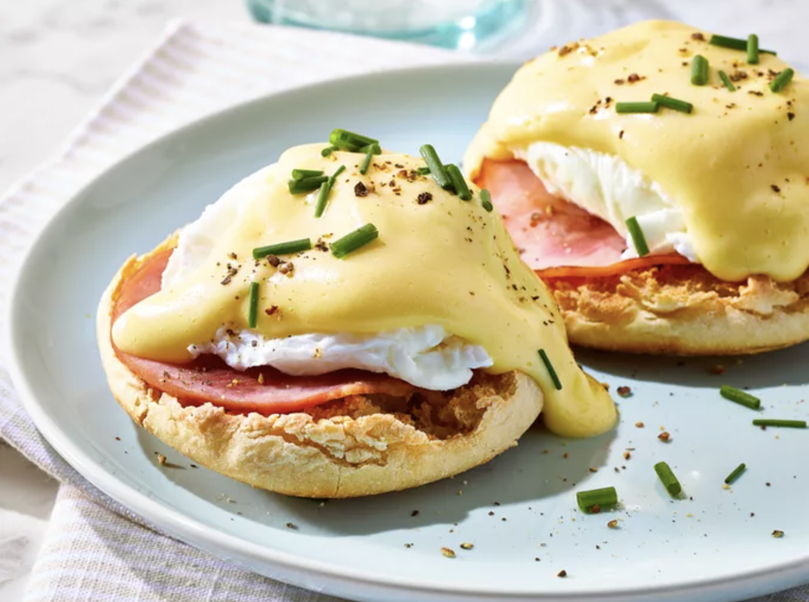

Eggs Benedict

Description
Eggs Benedict is an American breakfast dish that consists of a split
English muffin topped with Canadian bacon, a poached egg, and Hollandaise
sauce.
Ingredients
- 1 teaspoon distilled white vinegar
- 8 eggs
- 8 strips Canadian-style bacon
- 4 English muffins, split
- 2 tablespoons butter, softened
-
Fill a large saucepan with 2 to 3 inches of water and bring to a boil
-
Reduce heat to medium-low, pour in vinegar, and keep water at a gentle
simmer
-
Crack an egg into a small bowl then gently slip egg into simmering
water, holding the bowl just above the surface of water
- Repeat with the remaining eggs
-
Cook eggs until whites are firm and yolks have thickened but are not
hard, 2 1/2 to 3 minutes
-
Remove eggs from water with a slotted spoon, dab on a kitchen towel to
remove excess water, and place onto a warm plate
-
Meanwhile, set an oven rack about 6 inches from the heat source and
preheat the oven's broiler
- Brown bacon in a medium skillet over medium-high heat
-
Toast English muffins on a baking sheet under the preheated broiler
-
To serve eggs Benedict: Spread toasted muffins with softened butter and
top each one with a slice of bacon, followed by one poached egg
-
Place 2 muffins on each plate and drizzle with Hollandaise sauce.
Sprinkle with chopped chives and serve immediately